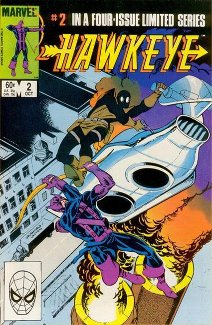
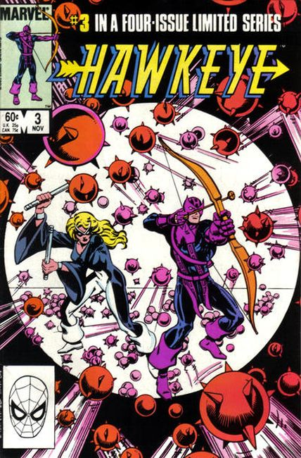
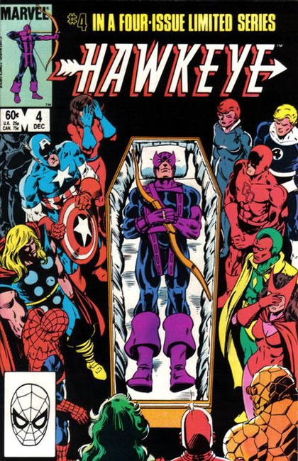

Avenger and ace archer Hawkeye gets his own limited series as well as a new rocket-sled. In this first issue, Hawkeye tells his girlfriend, Sheila Danning, his origin story, and then battles Mockingbird.

While trying to sleep, he is rudely awakened (and almost killed) by a silent assassin. Mockingbird then sews Hawkeye a new costume.

Hawkeye, the world's greatest archer, and Mockingbird go to the lovely lady's apartment, only to trigger an explosion. The terrific twosome also battle Bombshell and Oddball.

Ace archer Hawkeye and pretty lady Mockingbird, who were defeated last issue by Bombshell and Oddball, are now in the clutches of Crossfire. Crossfire is the evil entrepreneur who contracted the company Hawkeye used to work for to build the components to Project: Undertaker, which is designed to eliminate all super-humans. The issue ends on a happy note, however, culminating in the revelation that Hawkeye and Mockingbird have gotten married.